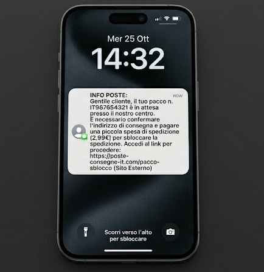
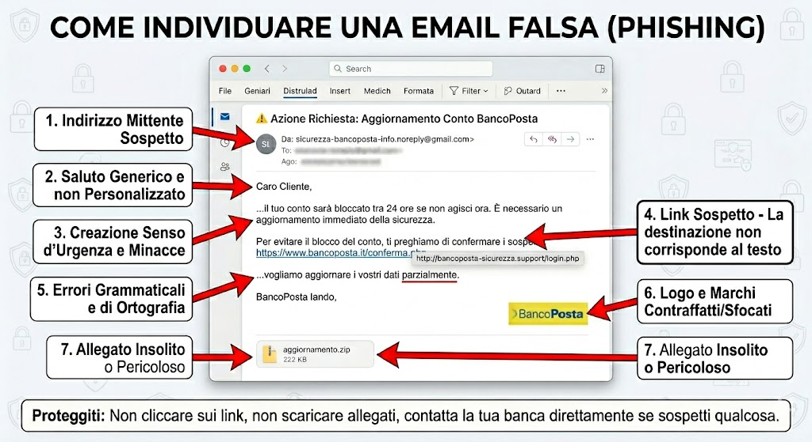

Luigi Peroni 4A informatica
Le truffe online sono tentativi di ingannare le persone attraverso internet per rubare soldi, dati personali o informazioni riservate. Oggi quasi tutti usano internet ogni giorno quindi è importante sapere come funzionano queste truffe e come difendersi.
Il problema è che spesso questi messaggi truffaldini sembrano veri, usano loghi ufficiali di banche o enti pubblici e cercano di creare panico o urgenza per far agire la vittima in fretta senza pensare.
Esistono diversi tipi di truffa online, ognuno usa un canale diverso per raggiungerti. I tre più comuni si chiamano phishing, vishing e smishing.
| Nome | Come funziona | Canale usato | Esempio tipico |
|---|---|---|---|
| Phishing | Email false che sembrano ufficiali | Posta elettronica | "Il tuo conto è bloccato, clicca qui" |
| Vishing | Chiamate telefoniche di finti operatori | Telefono / voce | "Sono della sua banca, c'è un problema urgente" |
| Smishing | SMS con link pericolosi | Messaggi SMS | "Pacco in attesa, clicca per confermare" |
| Browser | Malware nel browser che intercetta dati | Estensioni / aggiornamenti falsi | Aggiornamento falso che installa virus |
Il phishing è forse la truffa più conosciuta. I truffatori mandano email che sembrano provenire dalla banca, da Poste Italiane, dall'INPS o da altri enti. Il messaggio dice che c'è un problema urgente e ti chiede di cliccare un link. Quel link però porta a un sito falso identico a quello reale, dove ti chiedono username e password.
Vishing viene da "voice phishing". Il truffatore ti chiama fingendo di essere un operatore della banca o di un'azienda famosa. Dice che c'è un'anomalia sul tuo conto e ti chiede di confermare i tuoi dati. A volte usano anche messaggi preregistrati. La cosa importante da sapere è che la tua banca non ti chiederà MAI il PIN o la password per telefono.
Lo smishing funziona come il phishing ma attraverso gli SMS. Ricevi un messaggio che sembra inviato dalla banca o da un corriere, con un link da cliccare. Il link porta a un sito falso o scarica direttamente un virus sul tuo telefono.

Questi sono alcuni esempi reali di truffe che circolano spesso in Italia:
Ci sono alcuni segnali che possono aiutarti a capire se un messaggio è una truffa. Non sempre è facile, ma questi sono i più comuni:

Proteggersi online non è difficile se si seguono alcune regole di base. Ecco i consigli più importanti:
Una buona password deve essere lunga almeno 12 caratteri e contenere lettere maiuscole, minuscole, numeri e simboli. Evita di usare il tuo nome, la data di nascita o parole facili. Non usare la stessa password per siti diversi e soprattutto non usare la stessa password per il conto bancario e per i social.
L'autenticazione a due fattori (chiamata anche 2FA) aggiunge un secondo livello di sicurezza. Oltre alla password ti viene chiesto un codice temporaneo che arriva sul telefono. Anche se qualcuno ruba la tua password non può accedere al tuo account senza quel codice.
Prima di cliccare su un link, passa il mouse sopra senza cliccare e guarda in basso a sinistra del browser, vedrai l'indirizzo reale a cui porta il link. Se sembra strano non cliccare. In caso di dubbio vai direttamente sul sito ufficiale digitando l'indirizzo a mano nel browser.
Controlla sempre che il sito abbia il lucchetto nella barra degli indirizzi e scritto hhttps. Leggi bene l'indirizzo del sito prima di inserire dati personali. Per le email controlla chi è il mittente reale, non solo il nome visualizzato.
Un antivirus aggiornato protegge da molti virus e malware. Aggiorna il sistema operativo regolarmente. Scarica le app solo dagli store ufficiali (App Store o Google Play).
Internet è uno strumento utilissimo ma come tutti gli strumenti può essere usato male, sia da noi che dagli altri. Le truffe online sono sempre più sofisticate e colpiscono tutti, non solo le persone anziane o poco esperte di tecnologia.
La cosa più importante è non agire d'impulso. Quando arriva un messaggio che crea urgenza o paura, fermati un attimo e pensa: "questa richiesta ha senso? me la aspettavo? perché mi chiedono questi dati?"
Seguendo i consigli di questa pagina puoi ridurre molto il rischio di cadere in una truffa e proteggere la tua identità digitale e i tuoi dati personali.
Identità Digitale - Educazione Civica
Luigi Peroni